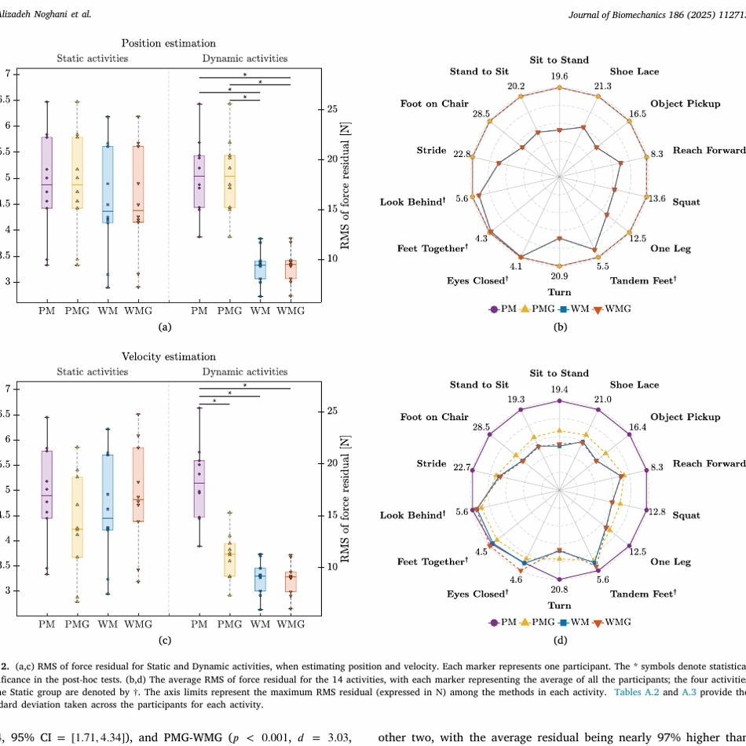

BIOMECHANICS / STATE ESTIMATION
Center of Mass Estimation During Non-Cyclic Activities
Whole-body center of mass is the mass-weighted average position of the body’s mass and is important for studying balance. Researchers can estimate its motion using a few pelvis markers or a larger whole-body marker set, but these options require different amounts of equipment and processing. This study compared their performance during everyday movements to help researchers choose suitable measurement setups for balance and wearable-robotics studies.
My contribution. As co-first author, I carried out the core computational research: implementing the estimation methods, processing the existing dataset, conducting statistical comparisons, validating the results, and preparing figures and manuscript content.
Methods
I analyzed an existing dataset of 10 healthy participants performing 14 activities, each repeated three times. The activities included standing, rising from a chair, and picking up an object. Four methods estimated center-of-mass position and velocity:
- PM: pelvis markers alone.
- PMG: pelvis markers combined with ground reaction forces measured by force plates.
- WM: whole-body markers and an OpenSim body model.
- WMG: whole-body marker estimates combined with ground reaction forces.
The two combined methods used a Kalman filter to fuse marker estimates with force measurements. I compared all four methods using the root-mean-square (RMS) external-force residual, measured in newtons (N). This residual quantifies the mismatch between measured net force and force derived from estimated acceleration; a lower residual indicates closer agreement.

Results
No statistically significant differences between methods were identified for static activities. For dynamic activities, whole-body methods produced lower position-related residuals than pelvis-based methods. Adding force measurements also improved pelvis-based velocity estimates.
14 activities: 4 static and 10 dynamic, each repeated three times.
Pelvis-based methods: 18.40 N. Whole-body methods: 9.34 N. These are method-group averages, not a before-and-after optimization.
Pelvis-based velocity-related force residual fell from 18.17 to 11.11 N with force fusion.
Discussion and limitations
The results support using whole-body tracking for dynamic activities and simpler pelvis tracking for activities similar to the static group. Where force plates are available, force fusion can improve pelvis-based velocity estimates. It did not significantly improve whole-body estimates in this study.
The study used data from 10 healthy participants, so these findings may not generalize to other populations or movements. The evaluation measured force residuals rather than direct center-of-mass position error.
STACK MATLAB · OpenSim · Kalman filtering · Biomechanical modeling · Statistical analysis